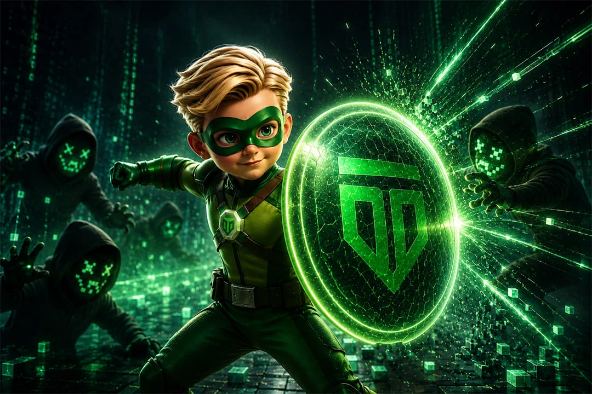

La sicurezza informatica non riguarda solo le grandi aziende

Per anni la sicurezza aziendale è stata associata quasi esclusivamente a rischi fisici, ambienti di lavoro e protezione delle persone. Oggi però esiste un’altra minaccia, spesso invisibile ma estremamente concreta, che può bloccare operatività, produzione e reputazione di un’intera azienda in pochi minuti.
Parliamo della sicurezza informatica.
E il punto più importante è questo, non riguarda soltanto le grandi multinazionali. Anzi, sempre più spesso gli attacchi colpiscono PMI, studi professionali, attività locali e aziende che pensano di essere “troppo piccole” per diventare un bersaglio.
Noi di Tutor Consulting, insieme a Ingenio, vediamo ogni giorno quanto la consapevolezza digitale faccia la differenza tra un’azienda preparata e una vulnerabile.
Perché le aziende sono sempre più esposte agli attacchi informatici
Oggi qualsiasi impresa gestisce dati digitali.
Email, preventivi, documenti interni, dati dei clienti, fatture, accessi bancari, cloud, smartphone aziendali, software gestionali e piattaforme online fanno ormai parte della quotidianità lavorativa.
Ed è proprio questa interconnessione continua ad aumentare i rischi.
Molti attacchi informatici non avvengono attraverso sistemi complessi da film hollywoodiano. Spesso partono da errori molto semplici:
- password deboli
- email phishing aperte per distrazione
- dispositivi non aggiornati
- accessi condivisi tra dipendenti
- backup assenti o gestiti male
- reti aziendali poco protette
Basta un solo punto vulnerabile per compromettere un’intera struttura.
Le PMI sono tra i bersagli più colpiti
Una delle convinzioni più diffuse è che gli hacker prendano di mira soltanto grandi aziende o enti internazionali.
La realtà è molto diversa.
Le piccole e medie imprese sono spesso obiettivi perfetti perché dispongono di meno protezioni, meno formazione interna e procedure di sicurezza meno strutturate.
Molte PMI credono di non avere dati “interessanti”, ma per un attacco ransomware basta avere accesso ai file aziendali, ai contatti dei clienti o alla possibilità di bloccare operatività e produzione.
Ed è qui che nasce il problema più grande: spesso ci si accorge dell’importanza della sicurezza informatica soltanto dopo aver subito un danno.
Gli attacchi informatici non colpiscono solo i computer
Quando si parla di cybersecurity si pensa subito alla tecnologia. In realtà il vero punto debole è quasi sempre il fattore umano.
Una mail apparentemente innocua, un link aperto senza attenzione o una password troppo semplice possono diventare l’ingresso perfetto per un attacco.
Per questo oggi la sicurezza informatica non può essere vista soltanto come una questione tecnica. Deve diventare una cultura aziendale condivisa.
Ogni collaboratore dovrebbe sapere riconoscere comportamenti rischiosi, proteggere gli accessi e utilizzare gli strumenti digitali in modo più consapevole.
Cosa significa davvero proteggere un’azienda
Fare sicurezza informatica non significa soltanto installare un antivirus.
Significa costruire un sistema di protezione fatto di tecnologia, procedure, controllo e formazione.
Una gestione efficace dovrebbe includere:
- protezione degli accessi e delle password
- backup automatici e verificati
- aggiornamenti costanti dei sistemi
- controllo degli accessi ai dati aziendali
- protezione delle reti interne
- gestione sicura dei dispositivi mobili
- formazione del personale
- procedure in caso di attacco o perdita dati
La differenza tra un’azienda vulnerabile e una preparata sta quasi sempre nell’organizzazione preventiva.
Cybersecurity e continuità operativa
Molte aziende sottovalutano un aspetto fondamentale: un attacco informatico può fermare completamente l’operatività.
Bloccare email, gestionali, produzione o accessi ai documenti significa interrompere il lavoro quotidiano, perdere tempo, clienti e credibilità.
In alcuni casi il danno economico diretto è persino inferiore rispetto al danno reputazionale.
Perché oggi clienti e partner vogliono sentirsi sicuri nel condividere dati, informazioni e processi con aziende affidabili anche dal punto di vista digitale.
Formazione e consapevolezza fanno la vera differenza
La tecnologia da sola non basta.
Per questo la formazione rappresenta uno degli strumenti più importanti nella prevenzione dei rischi informatici.
Creare consapevolezza all’interno dell’azienda significa ridurre drasticamente errori, comportamenti rischiosi e vulnerabilità quotidiane.
Ed è proprio qui che molte imprese fanno ancora troppo poco.
La sicurezza digitale dovrebbe essere affrontata con la stessa attenzione dedicata alla sicurezza sul lavoro, perché oggi entrambe incidono direttamente sulla stabilità dell’azienda.
Aspetta che questo tema venga sottovalutato.
Ti aiuta a trasformarlo in un'azione concreta. Parliamone.